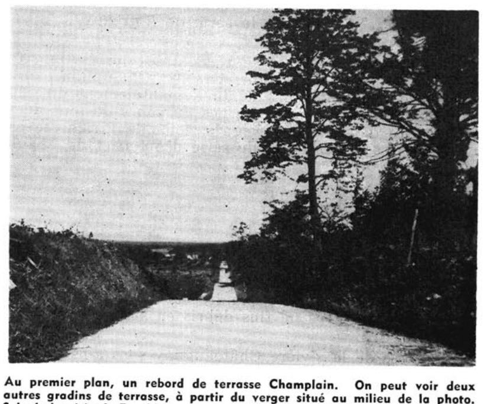
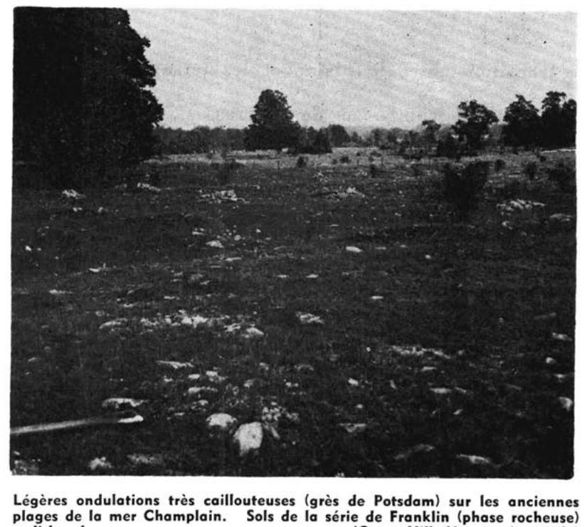

Identification & Caractéristiques Générales
Les sols de la série de Franklin se développent sur des tills morainiques d'origine locale, formés principalement à partir de matériaux gréseux calcifères et calcaires de la région physiographique des basses-terres du Saint-Laurent. La géomorphologie de ces secteurs se caractérise par des modelés de coteaux, de croupes et de buttes à topographie modérément inclinée, orientés généralement selon un axe sud-nord, et séparés par de petites vallées. Le matériau parental présente une charge caillouteuse et graveleuse prononcée, constituée de blocs et de fragments rocheux d'origine gréseuse disséminés en surface et à travers tout le profil pédologique.
Morphologiquement, ces sols possèdent un profil meuble à texture grossière, caractérisé par une structure friable et un bon drainage naturel lorsqu'ils occupent le sommet et les pentes supérieures des élévations. Le profil montre des tendances à la podzolisation, avec un horizon éluvial $A2$ souvent discontinu et discontinu en poches, rattachant ces sols aux bruns podzoliques. Sur les pentes inférieures et en position bas de pente, le drainage est entravé par la présence d'une couche compacte sous-jacente cimentée par des carbonates, agissant comme une barrrière physique (hardpan) qui restreint la percolation verticale de l'eau et la pénétration racinaire. La réaction du sol (pH) est généralement neutre à légèrement acide, traduisant l'influence des formations calcifères sous-jacentes.
Sur le plan agronomique, ces sols conviennent particulièrement à la production pomicole en raison de leur bonne aération, de leur perméabilité et de leur profondeur utile. Toutefois, la gestion de leur fertilité nécessite des apports réguliers en matière organique et le maintien d'un paillis adéquat pour optimiser la rétention en eau et l'efficacité des fertilisants, particulièrement durant les périodes de sécheresse estivale. Les principales limitations incluent la forte pierrosité et la présence de blocs rocheux qui compliquent les opérations de travail du sol et rendent l'épierrement dispendieux, notamment pour les phases très caillouteuses qu'il est préférable de maintenir sous couvert forestier. Le drainage souterrain est requis dans les secteurs de transition ou de bas de pente affectés par des nappes temporaires ou une compacité prononcée du sous-sol.
Classification Taxonomique & Environnement Pédologique
| Ordre Pédologique | Brunisolique |
|---|---|
| Grand Groupe (SCSS) | Brunisol sombrique |
| Sous-Groupe Taxonomique | Brunisol sombrique éluvié |
| Famille Pédologique | Squelettique-sableuse, mixte sableux, neutre |
| Mode de Dépôt Parental | Marin |
| Classe de Drainage Naturel | Très rapidement drainé |
| Régime Thermique & Humidité | Doux / Aride |
Description Morphologique du Profil Type
Séquences génétiques des horizons pédologiques caractérisant le profil type représentatif de la série Franklin :
Profil naturel (vierge) — Comté de Châteauguay
✓ Source : Comté de Châteauguay — Page 64Couleur Munsell : Non précisée
Structure & Consistance : Polyédrique à granulaire
Description morphologique : 0-1"
Couleur Munsell : Non précisée
Structure & Consistance : Polyédrique à granulaire
Description morphologique : 1-7"
Couleur Munsell : Non précisée
Structure & Consistance : Polyédrique à granulaire
Description morphologique : Gravier fin gris cendré, en poches, dans les points les plus sableux.
Couleur Munsell : Non précisée
Structure & Consistance : Polyédrique à granulaire
Description morphologique : 9-14"
Couleur Munsell : Non précisée
Structure & Consistance : Polyédrique à granulaire
Description morphologique : 14-32"
Couleur Munsell : Non précisée
Structure & Consistance : Polyédrique à granulaire
Description morphologique : 32"
Profil naturel (vierge) — Comté de Huntingdon — Phase rocheuse
✓ Source : Comté de Huntingdon — Page 132Couleur Munsell : Non précisée
Structure & Consistance : Polyédrique à granulaire
Description morphologique : Litière de feuilles sèches et de débris végétaux en décomposition.
Couleur Munsell : Non précisée
Structure & Consistance : Finement grumeleuse
Description morphologique : Gravier fin, brun foncé, moyennement humifère; structure finement grumeleuse, poreuse et friable. pH: 6.0.
Couleur Munsell : Non précisée
Structure & Consistance : Polyédrique à granulaire
Description morphologique : Gravier fin, gris cendré, podzolisé en poche dans les points les plus sableux.
Couleur Munsell : Non précisée
Structure & Consistance : Polyédrique à granulaire
Description morphologique : Gravier fin, brun café, grenu, lâche. Cailloux fréquents. pH: 5.7.
Couleur Munsell : Non précisée
Structure & Consistance : Polyédrique à granulaire
Description morphologique : Gravier fin, brun café, de teinte plus claire que B 21 , grenu, lâche. Eléments bien triés et stratifiés. pH: 5.7.
Couleur Munsell : Non précisée
Structure & Consistance : Polyédrique à granulaire
Description morphologique : Gravier fin avec lits minces de cailloutis interstratifiés, gris brun à brun grisâtre, lâche, horizon profond et perméable. pH: 6.3 — 6.7.
Profil cultivé (agricole) — Comté de Huntingdon — Phase rocheuse fs-r
✓ Source : Comté de Huntingdon — Page 139Couleur Munsell : Non précisée
Structure & Consistance : Grumeleuse
Description morphologique : Gravier caillouteux, brun foncé, structure grumeleuse, friable, graviers de 2 — 5 mm surtout, aussi abondance de granules de 10 — 20 mm. pH: 6.0 — 6.5.
Couleur Munsell : Non précisée
Structure & Consistance : Polyédrique à granulaire
Description morphologique : Gravier caillouteux, brun café uniforme, meuble et lâche, perméable, stratifié. pH: 6.5 — 6.9.
Couleur Munsell : Non précisée
Structure & Consistance : Polyédrique à granulaire
Description morphologique : Gravier brun grisâtre à brun café, avec cailloux fréquents, matériaux très lâches. pH: 6.5 — 6.9.
Couleur Munsell : Non précisée
Structure & Consistance : Polyédrique à granulaire
Description morphologique : Gravier caillouteux brun grisâtre, matériaux stratifiés avec cailloux fréquents. Horizon profond et perméable. pH: 6.3 — 6.8.
Profils Photographiques & Planches de Terrain
Documents iconographiques, figures pédologiques et coupes de terrain documentées dans les mémoires d'inventaire pour de la série Franklin :




Propriétés Physico-Chimiques & Analyses de Laboratoire
Données Analytiques de Laboratoire
Aucune analyse physico-chimique quantitative de laboratoire (granulométrie par sédimentométrie, pH H₂O/CaCl₂, matière organique Walkley-Black ou bases échangeables) n'a été consignée pour cette unité dans les archives historiques numérisées ou les bases contemporaines EESSAQ/MAPAQ.
Particularités Régionales, Phases & Variantes Pédologiques
Déclinaisons régionales, faciès texturaux, phases d'érosion ou de pierrosité et variantes cartographiées par étude pour de la série Franklin :
| Étude Régionale | Symbole | Appellation / Phase / Variante | Différenciation avec la série type (Analyse pédologique) |
|---|---|---|---|
| Comté de Huntingdon | F |
Franklin gravier | Modalité modale de référence (type de base de la série). |
F-R |
Franklin gravier caillouteux phase rocheuse | Conforme à la série type de référence (caractéristiques texturales et drainage identiques). | |
Fs |
Franklin sable graveleux caillouteux | Phase graveleuse à perméabilité accrue et réserve utile diminuée; Faciès textural de surface sable (distinct du gravier de référence). | |
Fs-R |
Franklin sable graveleux caillouteux phase rocheuse | Phase graveleuse à perméabilité accrue et réserve utile diminuée; Faciès textural de surface sable (distinct du gravier de référence). | |
| Comté de Châteauguay | F |
Franklin gravier | Conforme à la série type de référence (caractéristiques texturales et drainage identiques). |
F-co |
Franklin gravier sableux caillouteux (complexe) | Faciès textural de surface sable (distinct du gravier de référence). |
Distribution Pédo-Paysagère & Représentativité Cartographique (Couverture PPS 2026)
- Sorel sable (SOL) — co-occurrente dans 2 polygone(s)
- Sainte-Sophie sable à sable loameux (SSO) — co-occurrente dans 2 polygone(s)
- Rockburn loam sableux caillouteux (RKB) — co-occurrente dans 2 polygone(s)
Aptitudes Agronomiques, Hydropédologie & Conservation des Sols
Indicateurs Hydropédologiques & Vulnérabilité à l'Érosion (BDHP 2026)
Interprétation BDHP : Potentiel de ruissellement faible. Sols à infiltration rapide (sables profonds, graviers bien drainés).
Classement selon l'Inventaire des Terres du Canada (ITC / CLI) : Classe 3w.
- Potentiel agricole : Terroir adapté aux cultures régionales selon la texture dominante et la régie de drainage.
- Contraintes majeures : Très rapidement drainé. Risque d'engorgement temporaire ou d'excès d'eau printanier.
- Gestion & Aménagement : Drainage souterrain ou superficiel préconisé sur les terres planes. Chaulage et apport organique régulier selon les bilans agronomiques.
- Cultures adaptées : Grandes cultures (maïs, soya, céréales), prairies fourragères et cultures maraîchères selon le contexte géomorphologique.